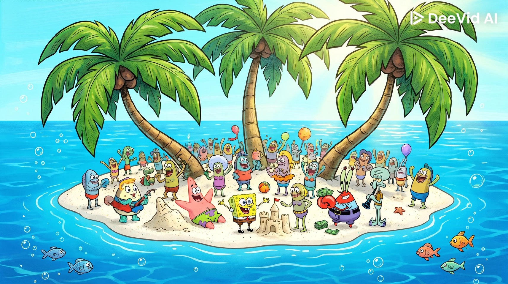
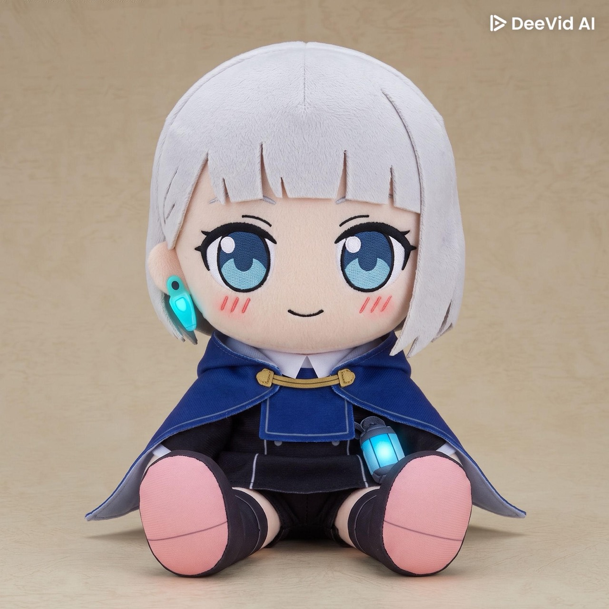

關於我
一個愛玩的大學生，對寫程式方面有興趣而進入國北教資科系，平時的愛好主要為打電動、追星和收集娃娃
不太喜歡與人交流，除非你是一個有趣的人，不然不太喜歡深交
未來想找一份編寫遊戲程式的工作，退休後想住沼津
Steven國立台北教育大學助理教授 |
一個愛玩的大學生，對寫程式方面有興趣而進入國北教資科系，平時的愛好主要為打電動、追星和收集娃娃
不太喜歡與人交流，除非你是一個有趣的人，不然不太喜歡深交
未來想找一份編寫遊戲程式的工作，退休後想住沼津
Steven國立台北教育大學助理教授 |
| Dates | Achievements |
|---|---|
| 2025 | 進入國立台北教育大學資訊科學系 |
| 剪輯 | ⭐⭐⭐ |
| Java | ⭐⭐ |
| C++ | ⭐⭐⭐⭐ |
| Python | ⭐ |

